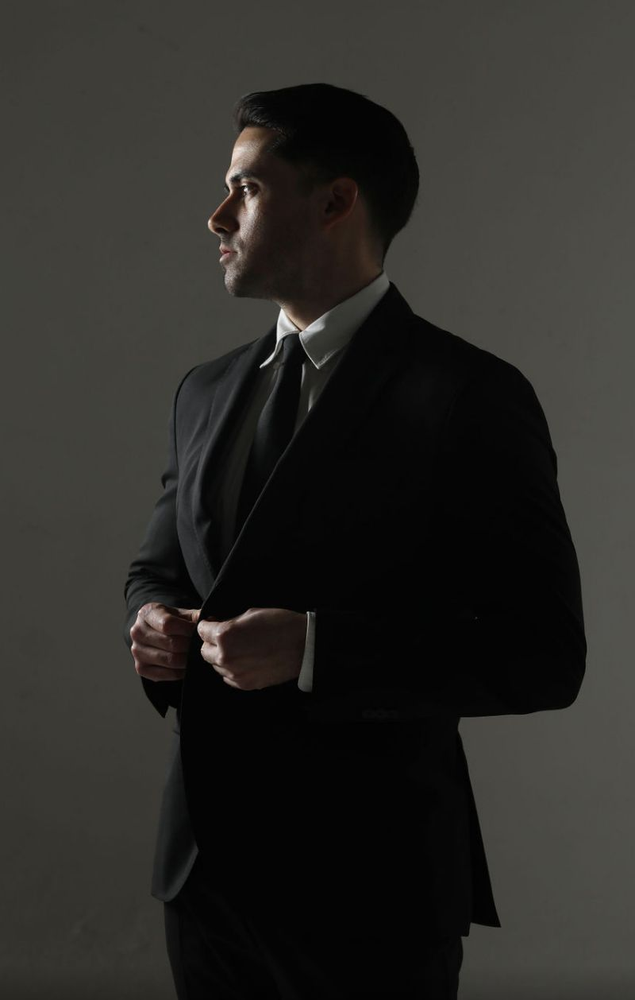
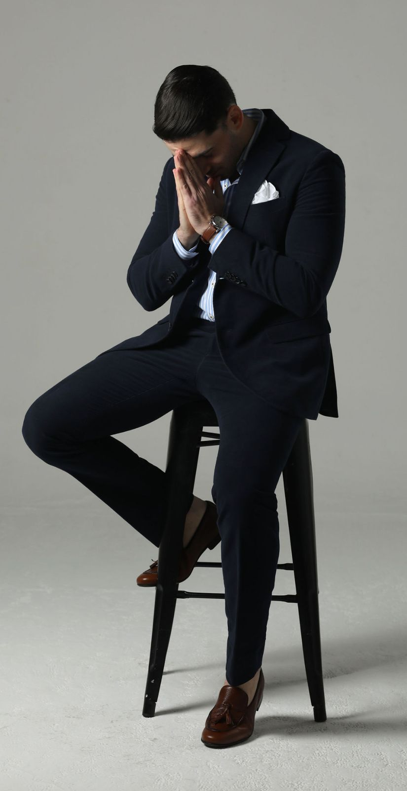
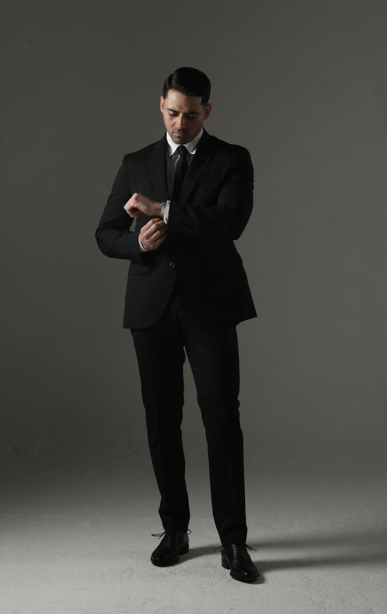

Nivel 1
Executive Image & Styling
¿Buscas elevar tu imagen profesional con una guía clara, personalizada y fácil de aplicar?
Este servicio está diseñado para perfiles ejecutivos que desean proyectar una imagen más sólida, actual y alineada a su entorno profesional.
- Formulario previo.
- Análisis de estilo, tipo de cuerpo y colorimetría.
- Diagnóstico de básicos y piezas clave.
- Lookbook digital con propuestas de 10 outfits.
- Stylebook con guía de estilo, colores y silueta.
- Seguimiento posterior durante 7 días (vía WhatsApp).
Todo se diseña con base en tu estilo de vida, con el objetivo de construir una imagen más intencional, funcional y coherente con lo que quieres comunicar.
Escríbeme por WhatsApp
Nivel 2
Executive Shopping & Styling
¿Buscas renovar tu estilo con compras bien pensadas y outfits listos para usar?
Este servicio es ideal para perfiles ejecutivos que desean proyectar mayor seguridad, presencia y coherencia visual en su entorno profesional, optimizando su clóset y evitando compras innecesarias.
Durante el proceso se lleva a cabo una sesión presencial de shopping para elegir prendas con intención: revisando fits, colores, telas, combinaciones y posibles ajustes.
- Formulario previo.
- Análisis de estilo, tipo de cuerpo y colorimetría.
- Diagnóstico de básicos y piezas clave.
- Sesión presencial de shopping (2 a 4 hrs).
- Revisión de fits, colores, telas, combinaciones y ajustes.
- Lookbook digital con propuestas de 20 outfits.
- Stylebook con guía de estilo, colores y silueta.
- Seguimiento posterior durante 15 días (vía WhatsApp).

Nivel 3
Executive Premium & Styling
¿Buscas una experiencia integral de imagen ejecutiva, estilo, shopping, outfits, grooming y sastrería?
Este servicio está diseñado para perfiles ejecutivos que desean trabajar su imagen de forma más completa y elevada, cuidando no sólo las prendas, sino también la presencia general: proporción, ajuste, color, combinaciones, corte de cabello / grooming y detalles de sastrería.
Además del análisis de estilo y la sesión de shopping, este paquete integra una asesoría especializada en sastrería para tomar mejores decisiones sobre cortes, telas, proporciones, caída, ajustes y detalles de prendas a medida o prendas que requieran modificación.
- Formulario previo.
- Análisis de estilo, tipo de cuerpo y colorimetría.
- Diagnóstico de básicos y piezas clave.
- Sesión presencial de shopping (2 a 4 hrs).
- Revisión de fits, colores, telas, combinaciones y ajustes.
- Lookbook digital con propuestas de 30 outfits.
- Stylebook con guía de estilo, colores y silueta.
- Propuesta de corte de cabello / grooming.
- Contacto directo con barbero recomendado.
- Tailored Advisory inicial con sastre.
- Seguimiento posterior durante 30 días (vía WhatsApp).